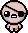
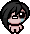
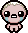

La Historia
La historia de The Binding of Isaac se basa en la historia de la biblia del mismo nombre.Isaac (un niño), y su madre viven en una casa situada en una colina, ambos manteniéndose a sí mismos pacíficamente, con Isaac dibujando y jugando con sus juguetes, mientras su madre mira programas de televisión cristianos. Llevaban una vida simple, y vivían felices. Eso fue hasta que un día, la madre de Isaac escucha «una voz de arriba», que dice que su hijo está corrupto por el pecado, y debe ser salvado. La voz le pide que le quite todo lo que es malo para él. Ella accede, quitándole sus juguetes, fotos, su consola de videojuegos portátil, e incluso su ropa.
La voz entonces llama a la madre de Isaac otra vez, señalando que debe ser alejado de toda la maldad de este mundo. Nuevamente, sigue sus ordenes y encierra a Isaac en su habitación. Finalmente, la voz le habla otra vez. Esta le dice que ha hecho bien, pero que aún duda de su fe, y entonces la voz le ordenó sacrificar a Isaac. Ella accede, tomando un cuchillo de cocina y luego dirigiéndose al cuarto de Isaac. Isaac, viendo por medio de una grieta en su puerta, empieza a entrar en pánico, hasta que encuentra una trampilla bajo de su alfombra que lleva al sótano, y justo cuando su madre entra a su habitación, el abre la trampilla, y salta a las profundidades del sótano. Isaac entonces muestra el papel en el que estaba dibujando, que lleva al jugador a la pantalla principal del juego, en el que tendrá que enfrentarse a endemoniadas versiones de si mismo, a monstruos aterradores, y a recolectar misteriosos objetos que le serán útiles para sobrevivir.
En la pantalla de carga, los pensamientos de Isaac son visibles. Mientras esta en posición fetal llorando, piensa en como fue humillado por sus compañeros, rechazado por su madre, y hasta imagina su propia muerte.
El gameplay
The Binding of Isaac: Rebirth es un shooter RPG de acción generado aleatoriamente con
fuertes
elementos roguelike. Los jugadores acompañarán a Isaac en una búsqueda para escapar de su madre,
enfrentándose a
hordas de criaturas misteriosas, descubriendo secretos y luchando contra jefes temibles. En el camino,
Isaac
puede encontrar extraños tesoros que cambian su forma y le otorgan habilidades sobrehumanas. ¡Pero no
será
fácil!
Rebirth es la nueva versión del juego original que presenta un motor de juego que funciona a 60 FPS,
ilustraciones de estilo pixelado, efectos visuales pulidos y una nueva banda sonora de Ridiculon. Ah,
sí,
cientos de salas nuevas, sinergias y mejoras reajustadas por parte del creador de la serie, Edmund
McMillen y
otros desarrolladores. Hay tres DLC disponibles para Rebirth, (excepto en Rebirth) The Binding of Isaac:
Afterbirth, (en Afterbirth † y Repentance) The Binding of Isaac: Afterbirth † y (en Repentance) The
Binding of
Isaac: Repentance.
| Rebirth | |||||||||||
|---|---|---|---|---|---|---|---|---|---|---|---|
| Personajes | |||||||||||
 |
 |  |
 |
 |  |
 |
 |
 |  |
||
| - | Isacc | Magdalene | Cain | Judas | Blue Baby | Eve | Samson | Azazel | Lazarus | Eden | The Lost |
| Vida | |||||||||||